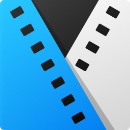

Sono necessari tempo e pazienza per trovare il programma giusto. Alcuni sono più complessi ed altri meno,
altri sono a pagamento ed altri no. Passiamo all'esame i più comuni:
|
Lightworks è un software free e multipiattaforma. Purtroppo è un po' complesso da usare e vi servirà del tempo per studiarvelo.
| |
 |
Nel caso in cui il vostro budget sia un po' più generoso, allora potreste prendere in considerazione Adobe Premiere: un software molto sofisticato ed utilizzato anche in ambito professionale, talvolta molto costoso.
|
| Ad un prezzo leggermente più a buon mercato troviamo Vegas Pro. Anche questo è un software molto utilizzato soprattutto dagli youtubers ma anche in altri campi. |
 |